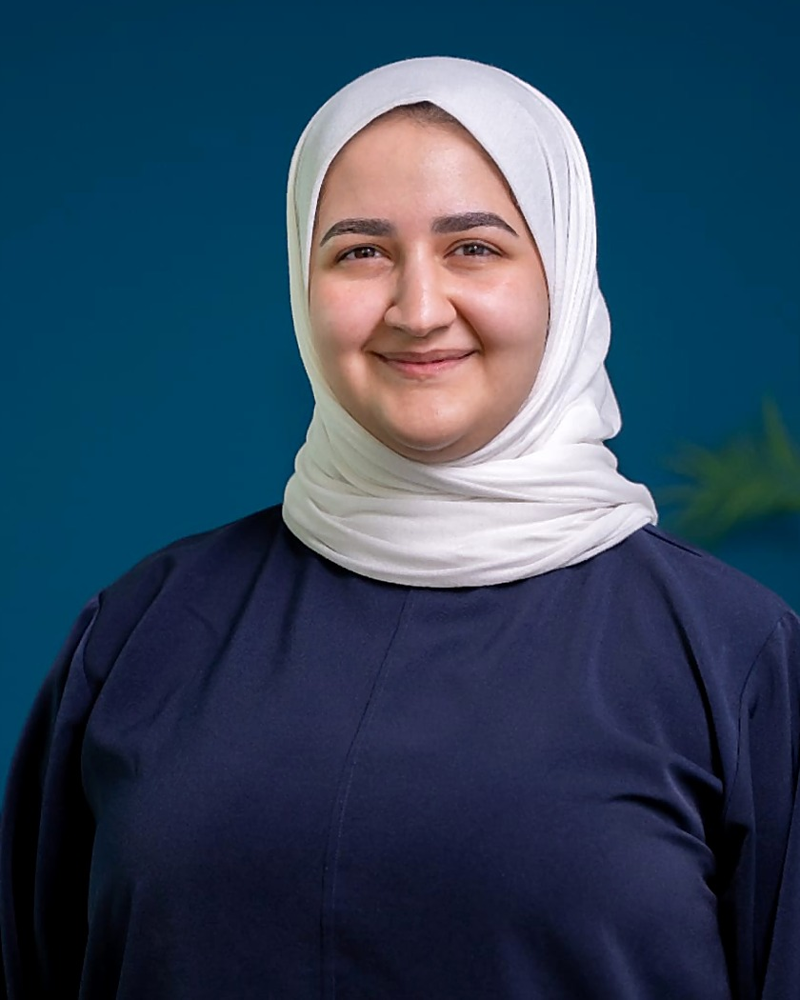

Zahra Redha
Data Analytics Officer | BSc Data Science & Business Analytics | University of London (LSE)
Data analyst with a BSc in Data Science and Business Analytics from the University of London (LSE), who developed Mazad’s data function from the ground up. Experienced in building ETL pipelines in AWS Glue, centralising data in Redshift, writing the SQL behind 10+ Power BI reports, and automating the reporting management relies on. Skilled in turning complex data into clear answers to the business questions leadership asks, and ensuring the numbers behind them are accurate and reliable.

Work experience
Three roles at Mazad, from the first intern to work on data to a full-time analyst.
Mazad (July 2024 to Present)
-
June 2026 to Present
Full-Time Data Analyst
- Drove a strategic shift in how the company auctions by category. Analysed why a key category was underperforming, presented recommendations to stakeholders, and the restructuring that followed increased sell-through.
- Built and automated alert reports to track employee performance, improving the efficiency of performance tracking.
- Entrusted with participating in the recruitment of the data analytics interns.
- Engaged beyond the data role: selected to represent Mazad at Youth City, presenting to young people on how data helps leaders make better decisions, and active member of the company’s Social Committee.
-
July 2025 to May 2026
Part-Time Data Analyst
- Established the company’s data analytics function, introducing Power BI and automating regular reporting on deposits, auctions, growth, employee performance, and engagement through AWS Glue pipelines and a cloud data warehouse.
- Built and monitored ETL pipelines to ensure clean, consistent and reusable data for reporting and future AI initiatives.
- Identified database limitations affecting report accuracy and put workarounds in place until a permanent fix was scoped.
-
July 2024 to September 2024
Data Analytics Intern
- First to tackle data within the company, gaining a deep understanding of the business processes and existing database limitations.
- Built Power BI dashboards to monitor platform performance, giving management an analytical view of the company.
Tamkeen (July 2023 to August 2023)
-
July 2023 to August 2023
Project Assessment Intern
- Performed UAT for software validation and ensured quality across project deliverables.
- Cleaned and organised data using Excel and worked with cross-functional teams to meet project deadlines.
Skills
Technical skills
Power BI, PostgreSQL, AWS Glue (ETL), Amazon Redshift, Google Analytics, Mixpanel, Microsoft Excel, Power Automate
Data domains
Financial data, user engagement events, employee performance, operational systems and product analytics
Core competencies
ETL pipeline development, dashboard design & reporting, stakeholder communication and data centralisation
Languages
Arabic (Native), English (Fluent)
Education
Sep 2022 to May 2026
BSc Data Science & Business Analytics
University of London / London School of Economics
2022
International Baccalaureate (IB)
Arabian Pearl Gulf School
Gallery
Beyond work
Outside of work you’ll find me in a classroom somewhere in Bahrain, volunteering with INJAZ. I do it to give back and to get young people thinking bigger about money, work, and what they’re capable of. That same energy took me to Youth City, where I presented to Bahraini youth on how data helps leaders make better decisions.
The rest of my time goes to running, spending time outdoors, and practising Arabic calligraphy.